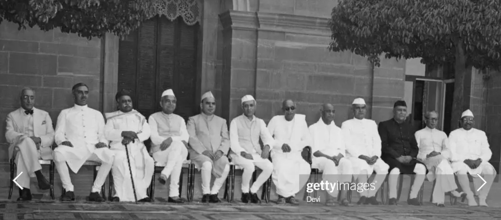

<!DOCTYPE html>
<html lang="en">
  <head>
    <meta charset="UTF-8" />
    <meta http-equiv="X-UA-Compatible" content="IE=edge" />
    <meta name="viewport" content="width=device-width, initial-scale=1.0" />
    <title>Document</title>
  </head>
  <body></body>
</html>

<!DOCTYPE html>
<html>
  <head>
    <link rel="stylesheet" href="./style.css" />
  </head>

  <body>
    <main id="main">
      <h1 id="title">Sardar Vallabh bhai Patel</h1>
      <p>The man who united India</p>
      <figure id="img-div">
        
        <figcaption id="img-caption">
          Governors Of India The first official meeting of the governors of
          India's nine provinces at Government House in New Delhi, India, 8th
          May 1949. From left to right, Sir Hormasji Pherozshah Modi (Uttar
          Pradesh), Krishna Kumarsinhji Bhavsinhji, Maharaja of Bhavnagar
          (Madras), Madhav Shrihari Aney (Bihar), Mangal Das Pakvasa (Central
          Provinces), Sir Chandulal Trivedi (East Punjab), Prime Minister
          Jawaharlal Nehru (1889 - 1964), Governor-General C. Rajagopalachari,
          Deputy Premier Sardar Patel, Dr Kailash Nath Katju (West Bengal), Raja
          Sir Majaraj Singh (Bombay), Asaf Ali (Orissa) and Sri Prakasa (Assam).
          (Photo by Devi/Fox Photos/Hulton Archive/Getty Images)
        </figcaption>
      </figure>
      <section id="tribute-info">
        <h3 id="headline">Here's a time line of Saradar Patel's life:</h3>
        <ul>
          <li>
            <strong>1875</strong> - BIRTH OF VALLABHBHAI PATEL AT NADIAD Sardar
            Vallabhbhai Patel was born at Nadiad, District Kheda, Gujarat to
            Laadbai and Jhaverbhai. His native village was Karamsad.
          </li>
          <li>
            <strong>1893</strong>
            - Sardar Patel married Jhaverba of Gana Village at age 18
          </li>
          <li>
            <strong>1897</strong> - Sardar Patel passed the Matriculation Exams
            at the age of 22.
          </li>
          <li>
            <strong>1901</strong> - He became a district pleader and started
            practicing at Godhra Court.
          </li>
          <li>
            <strong>1903</strong> - Birth of Maniben, daughter of Jhaverba and
            Sardar Patel.
          </li>
          <li>
            <strong>1905</strong> - Birth of son Dahyabhai to Jhaverba and
            Sardar Patel
          </li>
          <li>
            <strong>1909</strong> - Jhaverba died in the hospital at Bombay
            (Mumbai). Vallabhbhai got the telegram message in the courtroom but
            still he completed the case proceedings in the interest of the
            person being defended.
          </li>
          <li>
            <strong>1910</strong> - Sardar Patel sent Maniben and Dahyabhai to
            St Mary's School in Bombay. Sardar Patel at the age of 36 enrolled
            at the Middle Temple Inn in London for Barristership. Completing a
            36-month course in 30 months, Sardar Patel finished at the top of
            his class and received a 50 pounds prize.
          </li>
          <li>
            <strong>1913</strong> - Returning to India, he settled in Ahmedabad
            and became one of the city's most successful barristers. He became a
            Criminal Lawyer which made him one of the wealthiest Barristers in
            Ahmedabad.
          </li>
          <li>
            <strong>1915</strong> - Became member of Gujarat Sabha which later
            became Gujarat Prantic Samiti. Gujarat Sabha nominated him as a
            delegate to attend Indian National Congress meeting in Mumbai
            (December 7, 1915).
          </li>
          <li>
            <strong>1917</strong> - He was elected as member in Ahmedabad
            Municipality on January 5, 1917 from Dariyapur ward by one vote.
            This was his first foray in an election of a political institution.
            This election was challenged and cancelled. He was elected again as
            an uncontested member on May 14, 1917 and became the Chairman of
            Sanitation Committee. The first conference was held in Godhra under
            the chairmanship of Mahatma Gandhi and Vallabhbhai was appointed as
            its Secretary. They worked against the custom of forced labour (Veth
            Pratha).
          </li>

          <li>
            <strong>1918-KHEDA SATYAGRAHA</strong>
            The Kheda Satyagraha was organised to support the peasants of the
            Kheda district who were unable to pay the high taxes levied by the
            British due to crop failure and a plague epidemic. Sardar Patel and
            a group of Mahatma Gandhi’s supporters organised a major tax revolt,
            and all the different ethnic and caste communities of Kheda rallied
            around it. The peasants of Kheda signed a petition calling for the
            tax for that year to be scrapped, in the wake of a famine. The
            Government first retaliated by rejecting the charter and
            confiscating properties, but finally relented for an honourable
            agreement for both parties. The tax for the year in question and the
            next would be suspended and the increase in rate reduced while all
            confiscated property would be returned. The victory was celebrated
            in Nadiad.
          </li>

          <li>
            <strong>1920</strong>
            - Congress won most of the municipal seats in Ahmedabad due to
            Vallabhbhai’s efforts. Vallabhbhai moved the resolution in Ahmedabad
            Municipality to place a statue of Tilak Maharaj in Victoria Garden
            on Jan 10, 1921. It was installed in 1929 after Sardar Patel left
            Ahmedabad Municipality.
          </li>
          <li>
            <strong>1923 - FLAG SATYAGRAHA</strong>
            He led the Nagpur Flag Satyagraha to uphold the right to honour
            national flag when Mahatma Gandhi was in jail.
          </li>

          <li>
            <strong>1924 - ELECTED AS PRESIDENT</strong>
            Sardar Vallabhbhai Patel won majority for Congress in the Ahmedabad
            Municipal body and was elected its President. He undertook several
            developmental projects within the walled city of Ahmedabad and also
            encouraged the extension beyond its existing limits. He also led the
            Borsad Satyagraha and won during this period.
          </li>
          <li>
            <strong>1927 - GUJARAT FACES UNPRECEDENTED FLOODS</strong>
            When Gujarat faced unprecedented floods, Sardar worked tirelessly
            and organised extensive relief works and visited various sites. He
            did not go home for six days and stayed in the office. He also
            extended support to District Collector of Kheda for relief
            operations.
          </li>
          <li>
            <strong>1928 - RESIGNED FROM PRESIDENTSHIP</strong>
            On April 14, 1928, Sardar resigned from Presidentship of Ahmedabad
            Municipality following differences over appointment of Chief
            Officer, I.R. Bhagat who faced allegations of corruption. Sardar
            Patel never returned to Ahmedabad Municipality in spite of several
            requests. The Bardoli Satyagraha of 1928 was led by Vallabhbhai
            Patel and was a classic example of Civil Disobedience Satyagraha and
            revolt in the Indian Independence Movement. It established Sardar
            Patel as one of the main leaders of the Independence Movement. It
            galvanised peasants of Bardoli to protest against arbitrary increase
            in land revenue and launch a Satyagraha. Peasants did not yield to
            coercion even though Government confiscated their land, property,
            crops and cattle. Government had to yield to the demand for
            appointment of an Inquiry Committee to review increased land revenue
            and the protest was thus successful. Vallabhbhai Patel was named as
            Sardar, the leader, in the hearts of people.
          </li>
          <li>
            <strong>1930 - DANDI MARCH</strong>
            Mahatma Gandhi’s historic Salt March to Dandi is one of the
            landmarks of the Indian Independence Movement. Sardar Patel was
            arrested on March 7, 1930 at Ras village near Anand where he was to
            deliver a lecture to rouse the conscience of people in favour of the
            Salt Satyagraha.
            <br />
            July 31 – Sardar Patel was arrested and sentenced to three months'
            imprisonment, when he joined a procession in Bombay on Tilak
            Anniversary and addressed a vast public gathering at Azad Maidan,
            Bombay. He was again arrested and sentenced to nine months’
            imprisonment while delivering a lecture opposing Government policy.
            On November 1, he was released from jail. Sardar Patel was jailed
            for six times in his entire life.
          </li>
          <li>
            <strong>1931 - PRESIDENT, INDIAN NATIONAL CONGRESS</strong>
            He became the President of the Indian National Congress in its
            Karachi session. He praised the martyrs of the Indian freedom
            struggle - Bhagat Singh, Sukhdev and Rajguru. He remained at the
            forefront of the party and had a decisive control till independence.
          </li>
          <li>
            <strong>1932 - NASIK PRISON</strong>
            Sardar Patel was shifted from Yervada to Nasik prison. His mother
            Laadba died when Sardar was in jail. His elder brother Vithalbhai
            died in 1933 and yet Sardar did not submit to conditions of British
            authorities for a parole to attend the funeral
          </li>
          <li>
            <strong>
              1938 - SESSION OF CONGRESS UNDER THE GUIDANCE OF SARDAR PATEL
            </strong>
            Feb 19 to 21 – The Session of Congress was held at Haripura in Surat
            District under the guidance of Sardar. Subhash Chandra Bose was
            elected as the President of the Congress.
          </li>
          <li>
            <strong>1939 - PRAJAMANDAL CONFERENCE</strong>
            May - While attending Prajamandal Conference at Bhavnagar, Sardar
            was attacked by a minorit group near Nagina Masjid, he was rescued
            but two of his associates were killed.
          </li>
          <li>
            <strong>1940 - SARDAR'S ARREST</strong>
            Arrested in Ahmedabad during the Individual Satyagraha launched to
            protest for upholding the freedom of speech.
          </li>
          <li>
            <strong>1941 - RELEASED FROM PRISON</strong>
            He was released from prison due to ailment of intestines.
          </li>

          <li>
            <strong>1942 - </strong>
            'Quit India' Resolution was passed by Bombay session of the All
            India Congress Committee (AICC). On the morning of August 9, 1942
            Sardar Patel was detained and sent to Ahmednagar jail and was later
            released. Al the Congress leaders were released for the
            pre-Independence negotiations after almost three years.
          </li>
          <li>
            <strong>1947 July 05</strong> – A ministry for negotiating with
            princely states was created and Sardar was sworn in as Minister.
            Sardar persuaded princely states to sign Standstill Agreement and
            Instrument of Accession within a short period. Thus, he succeeded in
            bringing together India as one nation under one system of governance
            for the first time in her history. August 15 - India achieved
            independence and Sardar was sworn in as Home Minister and Deputy
            Prime Minister. Oct 26 Maharaja Harisingh acceded Kashmir into the
            Indian Union and Sardar Patel sent the Indian Army to Kashmir. Nov 9
            Junagadh dispute Ignored Lord Mountbatten’s advice to refer Junagadh
            issue to UNO and persuaded the Government of India to accept the
            accession of Junagadh State. Nov 13 Visited Somnath temple Sardar
            visited Somnath temple in Saurashtra. Resolved to rebuild it with
            public funds.
          </li>
          <li>
            <strong>1948 Sept 24</strong> Operation Polo (Police action) was
            completed in Hyderabad and Nizam acceded Hyderabad into the Indian
            Union.
          </li>
          <li>
            <strong>1950 January 26</strong> - India became a Republic with Dr.
            Rajendra Prasad, as its first President. Dec 15- Breathed his last
            in Mumbai Sardar Patel took his last breath at 9:37 AM, in Mumbai.
            Cremated in Sonapur (Marine Lines, Mumbai). Dec 28- His ashes were
            immersed in holy confluence at Prayag.
          </li>
        </ul>

        <h3>
          If you have time, you should read more about this incredible human
          being on his
          <a
            id="tribute-link"
            href="https://en.wikipedia.org/wiki/Vallabhbhai_Patel"
            target="_blank"
            >Wikipedia entry</a
          >.
        </h3>
      </section>
    </main>
  </body>
</html>
